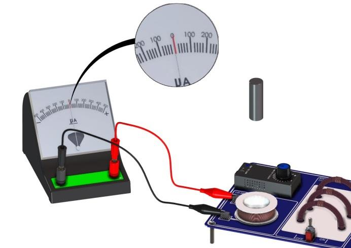
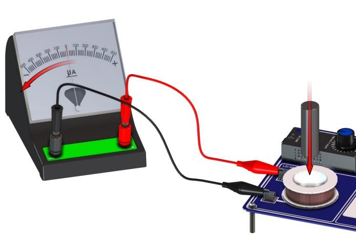
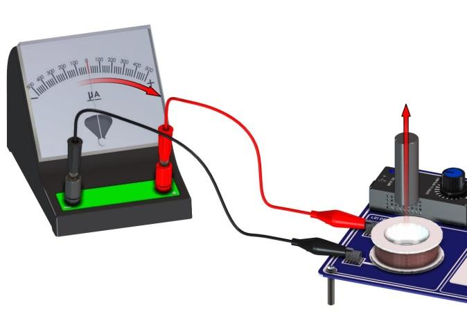

Mova um ímã em relação à bobina, estabeleça uma convenção de sinais e
conecte a deflexão transitória do galvanômetro à taxa de variação do
fluxo magnético.
Física III
montagem passiva
Faraday–Lenz · circuito RL
Montagem
Fixe primeiro a polaridade, os cabos e o sinal do instrumento. A
previsão deve ser registrada antes de qualquer movimento do ímã.
Objetivos de aprendizagem
Verificar, pelo galvanômetro, o surgimento de corrente elétrica induzida quando o fluxo magnético através da bobina varia.
Distinguir campo magnético, fluxo magnético e taxa de variação do fluxo.
Relacionar polo, sentido do movimento e rapidez ao sinal e ao pico da deflexão.
Interpretar a resposta real com a lei de Faraday–Lenz e um modelo de circuito RL.
Material do conjunto
1 placa para ensaios de experimentos de eletromagnetismo;
a bobina montada na própria placa;
1 galvanômetro de zero central, 500 µV–0–500 µV;
1 ímã de neodímio com soquete plástico;
1 par de cabos de ligação banana/jacaré.
O manual também relaciona uma fonte de 6 V/1 A ao conjunto. Ela
não alimenta a bobina neste roteiro: a etapa de
indução usa somente o movimento relativo do ímã.

Montagem de referência: os cabos ligam somente a bobina ao
galvanômetro; a fonte não integra o circuito de indução.
Fonte: manual AZEHEB
Previsão obrigatória antes de movimentar
Marque uma extremidade do ímã como polo N, escolha a deflexão para a
direita como sinal positivo do galvanômetro e desenhe o eixo da
bobina. Preveja o sinal para quatro controles: N aproximando, N
afastando, S aproximando e S afastando. Preveja também o que ocorrerá
ao manter o ímã parado e se o módulo do pico será maior para um
movimento lento ou rápido pela mesma trajetória. Preserve essa
previsão para confrontá-la com a observação.
Procedimento sistemático
Coloque o galvanômetro em superfície estável e leia sua posição de
repouso. Não ajuste nem force o ponteiro. Com a fonte desconectada,
ligue os bornes da bobina aos do instrumento e registre qual cabo
está em cada terminal.
Identifique o polo N do ímã e marque o polo que ficará inicialmente
voltado à bobina. Defina o eixo de movimento e mantenha o ímã
alinhado ao centro da bobina, sem inclinação lateral.
A partir de uma posição afastada, aproxime lentamente o polo
escolhido e introduza parcialmente o ímã na bobina. Registre o lado
da deflexão, o sinal adotado, o pico e a duração do pulso.
Mantenha o ímã parado na mesma posição por alguns instantes. Registre
a leitura depois que o transitório mecânico do ponteiro terminar;
não confunda a volta do ponteiro com uma inversão sustentada.
Retire o ímã lentamente pela mesma trajetória. Registre novamente
sentido, sinal, pico e duração, esperando o ponteiro retornar ao
repouso antes do próximo ensaio.
Repita a sequência aproxima–parado–afasta pelo menos três vezes sem
trocar os cabos. A repetição permite avaliar a dispersão causada
pelo movimento manual.
Inverta o ímã para que o outro polo fique voltado à bobina e repita
a sequência. Compare o sinal com o obtido para o primeiro polo.
Para cada polo, repita a mesma trajetória com rapidez crescente:
comece devagar e só depois use ritmos moderado e mais rápido,
sempre sem choque mecânico. Se não houver medida de velocidade,
registre apenas categorias qualitativas consistentes.

Aproximação e introdução: a variação do fluxo produz uma deflexão
transitória cujo sinal depende do polo, do movimento, do enrolamento
e da ligação dos cabos. Fonte: manual AZEHEB

Afastamento pela mesma trajetória: mantendo polo e cabos, a taxa de
variação do fluxo troca de sinal e a deflexão deve se inverter.
Fonte: manual AZEHEB
Fundamentos
O sinal nasce da orientação escolhida; o módulo nasce da rapidez com
que o fluxo concatenado muda e da resposta elétrica e mecânica do
conjunto.
1. Fluxo e orientação
Escolha uma normal unitária à área da bobina. Essa normal define a
área orientada e, pela regra da mão direita, o sentido positivo de
circulação ao redor da espira. Para uma volta:
\[
\Phi_B(t)=\int_S\vec B(\vec r,t)\cdot d\vec A.
\]
O produto escalar conta a componente de B normal à área. Se o campo
fosse aproximadamente uniforme sobre a área A, teríamos
\(\Phi_B\approx BA\cos\theta\). Campo forte não implica, por si só, fluxo grande:
área, orientação e não uniformidade também importam.
2. Faraday e o sinal de Lenz
Para N espiras equivalentes, o fluxo concatenado é NΦ_B. A força
eletromotriz no sentido positivo escolhido é
\[
\mathcal{E}(t)=-N\frac{d\Phi_B}{dt}.
\]
O sinal negativo não significa que a força eletromotriz é sempre
“negativa”. Ele expressa a lei de Lenz: a corrente induzida cria um
campo que se opõe à mudança do fluxo externo. Se
um fluxo positivo aumenta, ε é negativo; se esse mesmo fluxo
diminui, ε é positivo.
3. Ímã em movimento: regra da cadeia
Represente por \(z\) a posição assinada do ímã ao longo do eixo da bobina
e por \(v=\frac{dz}{dt}\) sua velocidade. Mantendo geometria e orientação
fixas, o fluxo pode ser escrito como Φ_B(z). Então:
\[
\begin{aligned}
\frac{d\Phi_B}{dt}
&=\frac{d\Phi_B}{dz}\frac{dz}{dt}\\
&=v\frac{d\Phi_B}{dz},\\
\mathcal{E}(t)
&=-Nv\frac{d\Phi_B}{dz}.
\end{aligned}
\]
A regra da cadeia separa o gradiente espacial do fluxo da velocidade do ímã.
Inverter o movimento troca o sinal de v; inverter o polo do ímã troca
o sentido do campo e, para a mesma geometria, o sinal de Φ_B e de
dΦ_B/dz. Cada inversão isolada troca o sinal de ε. Inverter polo e
movimento ao mesmo tempo restaura o sinal original. O sentido real do
ponteiro ainda depende do sentido do enrolamento e da ligação dos
cabos, por isso a convenção experimental precisa ser documentada.
4. Exemplo de convenção com o polo N
Suponha a normal positiva apontando da bobina para o lado por onde
o ímã entra. Com o polo N voltado à bobina, o campo próximo ao polo
aponta para dentro dela, em sentido oposto à normal: Φ_B é
negativo. Ao aproximar N, o módulo desse fluxo cresce,
\(\frac{d\Phi_B}{dt}\) fica negativo e \(\mathcal E\) fica positiva no sentido de circulação
definido. Trocar N por S ou aproximar por retirar inverte esse
resultado. A indicação “direita” ou “esquerda” só pode ser ligada a
esse sinal depois de registrar cabos e enrolamento.
5. Bobina, resistência e autoindutância
A bobina, os cabos e a resistência interna do galvanômetro formam um
circuito real. Se R representa a resistência total e L a
autoindutância efetiva, a lei das malhas fornece
A constante de tempo elétrica é \(\tau_e=\frac{L}{R}\). Quando \(\tau_e\) é muito menor
que a escala de tempo da variação do fluxo e a dinâmica mecânica do
galvanômetro não limita a leitura, o termo indutivo é pequeno e surge
o limite quase-estacionário \(i\approx\frac{\mathcal E}{R}\). Em movimentos
rápidos, a autoindutância, a inércia e o amortecimento do ponteiro
podem reduzir ou atrasar o pico observado; deflexão não é uma cópia
instantânea perfeita de ε(t).
N é adimensional. Assim, todos os termos da equação RL têm unidade
de volt e a forma de movimento é dimensionalmente compatível com a
lei de Faraday.
7. Hipóteses e limites
o ímã percorre aproximadamente o mesmo eixo em todos os ensaios;
a bobina, os cabos e o instrumento não mudam de orientação;
a posição inicial e a profundidade final são comparáveis entre velocidades;
não há saturação, choque de fim de escala ou contato intermitente;
o campo do ímã não é uniforme, logo dΦ_B/dz varia com z;
a resposta do galvanômetro pode filtrar transitórios muito rápidos.
Dados
Registre somente observações e leituras obtidas na bancada. A tabela
permanece vazia porque não há medições simuladas neste roteiro.
Variáveis operacionais
Polo: N ou S voltado à bobina.
Estado: aproxima, parado ou afasta.
Rapidez: lenta, moderada ou rápida; v em m/s somente se medida.
Sinal: lado do ponteiro e sinal +/− conforme a convenção registrada.
Pico: leitura máxima na escala ou divisões, sem extrapolar a calibração.
Duração: intervalo do pulso observado, quando mensurável.
Extensões opcionais
Régua, cronômetro, sensor de posição e sistema de aquisição
não estão incluídos no kit. Se disponíveis, podem
fornecer Δz, Δt, v≈Δz/Δt e a forma temporal do sinal. Identifique
instrumento, resolução, taxa de amostragem e interface usada; não
conecte aquisição sem verificar faixa e proteção de entrada.
Ensaio
Polo voltado à bobina
Aproxima / parado / afasta
Rapidez qualitativa ou v opcional (m/s)
Direção do ponteiro / sinal
Pico observado
Duração do pulso (s)
Observações
Tratamento dos dados
Agrupe cada sequência em aproximação, repouso e afastamento sem trocar cabos ou polo.
Verifique se aproximação e afastamento produzem sinais opostos para o mesmo polo.
Verifique se a inversão do polo troca o sinal para o mesmo movimento.
Compare repetições equivalentes e descreva dispersão, assimetria e eventuais valores atípicos.
Se houver velocidade medida, faça o gráfico
\(\lvert\mathcal E_{\mathrm{pico}}\rvert\) versus rapidez. Use a mesma trajetória e
compare a região em que \(\frac{d\Phi_B}{dz}\) é semelhante; uma tendência
aproximadamente linear é esperada apenas enquanto a resposta RL
e o galvanômetro não limitarem o pico.
Teste de consistência dos sinais
Tome um ensaio como referência. Uma única inversão — movimento ou
polo — deve inverter o sinal. Duas inversões devem recuperar o sinal
de referência. No estado parado, após o transitório do instrumento,
a leitura deve retornar ao zero mesmo com o ímã dentro da bobina.
Registre discrepâncias em vez de corrigir os dados.
Incerteza, resolução e repetibilidade
Determine na própria escala a menor divisão do galvanômetro e registre
a regra de leitura adotada; para arredondamento à divisão mais próxima,
pode-se usar metade da menor divisão como componente de resolução.
Acrescente paralaxe, largura do ponteiro, ajuste de zero, amortecimento
e risco de não capturar o pico. Avalie repetibilidade com ensaios
equivalentes e sua dispersão. O movimento manual acrescenta incerteza
de velocidade e posição; desalinhamento, inclinação e deslocamento
lateral alteram \(\frac{d\Phi_B}{dz}\). Se \(v\) for calculada, propague as resoluções de
\(\Delta z\) e \(\Delta t\) e separe essas incertezas dos desvios sistemáticos de trajetória.
Relatório
Registre a convenção antes de interpretar os sinais. O arquivo
relatorio.md contém a mesma estrutura em formato
preenchível.
Ao imprimir, somente esta aba será incluída.
Curso/turma:
Data:
Grupo:
Integrantes:
Objetivo e previsão original
Declare o objetivo com suas palavras e preserve as previsões de
sinal e pico feitas antes de mover o ímã.
Convenção de sinais
Desenhe normal, eixo z, sentido positivo de circulação, polo
voltado à bobina, posição dos cabos e lado +/− do ponteiro. Sem
esse diagrama, “direita” e “esquerda” não determinam o sinal físico.
Três estados controlados
Para o mesmo polo e os mesmos cabos, descreva separadamente:
aproximação, ímã parado e afastamento. Explique por que o estado
parado pode ter fluxo não nulo e força eletromotriz nula.
Dados e evidências
Transcreva somente leituras realizadas, com unidades e resolução.
Inclua desenho ou fotografia autorizada da montagem e identifique
repetições, polo, trajetória e rapidez.
Análise Faraday–Lenz e RL
Use \(\Phi_B=\int_S\vec B\cdot d\vec A\), derive
\(\mathcal E=-N\frac{d\Phi_B}{dt}\) e a forma de movimento.
Relacione os sinais observados à lei de Lenz. Depois interprete
amplitude e atraso com L di/dt + Ri = ε(t) e com o limite
i≈ε/R, quando justificável.
Incerteza e limitações
Informe resolução e leitura do galvanômetro, repetibilidade,
incerteza de rapidez e alinhamento. Discuta também resposta
mecânica, posição inicial/final e contato dos cabos.
Conclusão
Responda se os sinais e sua inversão são compatíveis com
Faraday–Lenz e se os dados sustentam alguma relação entre pico e
rapidez. Não apresente comparação quantitativa sem medidas.
Tabela mínima do relatório
Polo
Estado
Rapidez ou v (m/s)
Direção / sinal
Pico
Duração (s)
Observações
Perguntas
Por que a aproximação e o afastamento do mesmo polo produzem sinais opostos?
Por que a inversão do polo também inverte o sinal para um movimento fixo?
Como pode haver B e Φ_B não nulos sem indicação sustentada no galvanômetro?
Em que condições |ε_pico| deve crescer aproximadamente com a rapidez?
Como L/R e a dinâmica do ponteiro alteram um pulso muito rápido?
Quais desvios de trajetória podem imitar uma mudança de rapidez?
Checklist de entrega
□ identificação e objetivo;
□ segurança confirmada e fonte desconectada da bobina;
□ previsão original preservada;
□ convenção de normal, eixo, circulação, polo, cabos e sinal do ponteiro;
□ comparação aproxima–parado–afasta;
□ tabela com unidades e somente dados obtidos;
□ derivação de Faraday–Lenz, regra da cadeia e análise dimensional;
□ discussão do circuito RL e do limite quase-estacionário;
□ gráfico |ε_pico| versus rapidez, somente se houver dados quantitativos;
□ incertezas, perguntas e conclusão compatível com as evidências.